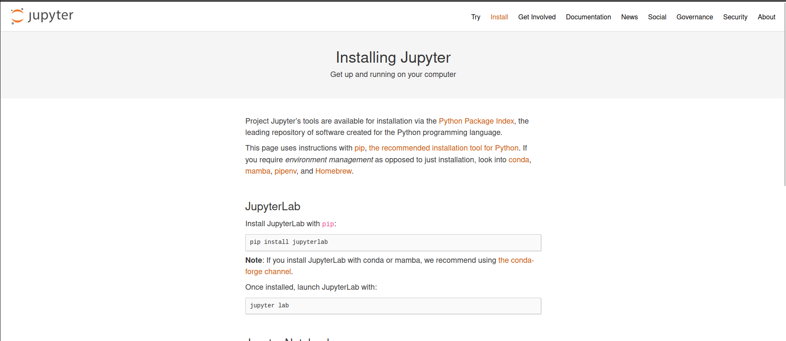
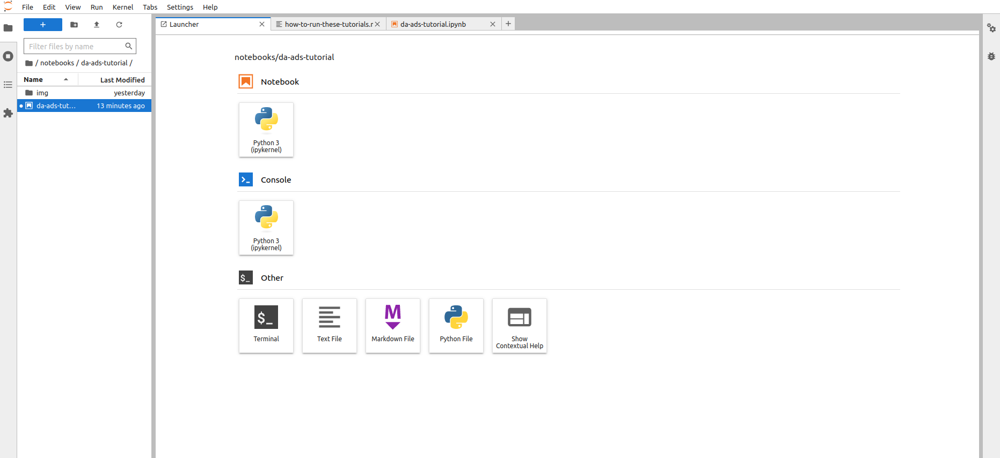
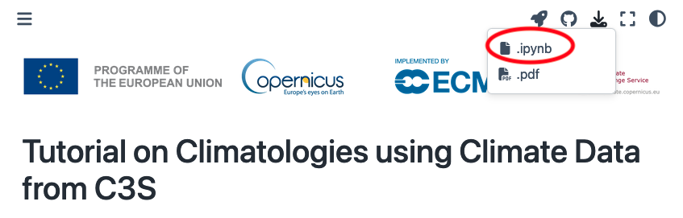

How to run these tutorials#
The tutorials are in the form of Jupyter notebooks, a powerful tool for interactive computing. Jupyter notebooks allow you to write and execute code, view the results, and add explanatory text all in one document. They are widely used in data science, research, and education due to their versatility and ease of use.
You will not need to install any software to work with Jupyter notebooks, as there are several free cloud-based services available for creating, editing, running, and exporting notebooks. These services provide a hassle-free environment where you can focus on your analysis without worrying about software installation or compatibility issues.
Possible Cloud-based services#
WEKEO
WEKEO is the EU Copernicus DIAS reference service for environmental data, virtual processing environments, and skilled user support. It is a platform for all audiences. This is our official platform for accessing the notebooks. You can access every notebook by clicking on the WEkEO link, which will redirect you to our official website. From there, you can open the notebook directly in JupyterHub. You need to be signed up to access the notebooks.
Warning
These free cloud-based services are not supported by ECMWF
Binder

Note
Binder may take some time to load, so please be patient!
Click on the Binder badge
Wait for the Binder environment to load.
Once loaded, navigate to the desired notebook and click on it to open and interact with it.
Kaggle

Note
Requires (free) registration with Kaggle. Once in, switch on the internet via settings.
Click on the Kaggle badge
If you’re not logged in to Kaggle, sign in or create a free account.
After signing in, you’ll be redirected to the Kaggle notebook interface with the option to open the notebook. Click on it to proceed.
Colab
Note
Requires Google account, and installation of some libraries, you can add our requirements.txt file and install all of them with pip install -r requirements.txt

Click on the Colab badge
If prompted, sign in to your Google account.
Once signed in, the notebook will open in Google Colab. You can then interact with and run the notebook in the Colab environment.
Note
These cloud-based services represent only a selection of the available options for running notebooks in the cloud. Users can leverage these services to execute Jupyter notebooks without the need to install any software locally. However, it’s essential to note that this selection is not exhaustive, and users may explore other cloud-based platforms tailored to their specific needs and preferences.
Run the notebooks locally#
Attention
If you would like to run this notebook in your own environment, we suggest you install Miniforge, which contains most of the libraries you will need.
In our github repository you can find every notebook in notebooks/ folder. Also, there is a requirements.txt file, containing the necessary python libraries for running our notebooks.You need to run this command in the same directory as the requirements.txt file.
pip install -r requirements.txt
To visualize and execute the notebooks, we recommend downloading JupyterLab, a versatile web-based interactive development environment. You can interact with our notebooks in this environment locally.
Note
If you prefer a lightweight interface and want to consum less resources, you may consider downloading Jupyter Notebook instead of Jupyter Lab. Jupyter Notebook provides a basic yet efficient environment for running your notebooks without consuming as many resources. It’s a great option for users who prioritize simplicity and performance in their workflow. Here’s documentation of Jupyter Notebook
Download JupyterLab:
Visit the Jupyter installation website in your web browser.
Navigate to the
Jupyter Labsection and follow the instructions to download and install JupyterLab for your operating system (Windows, macOS, or Linux).

Launch JupyterLab:
After installing JupyterLab, open your terminal or command prompt.
Type
jupyter laband press Enter to launch JupyterLab. This will start a local server and open JupyterLab in your default web browser.
Check the JupyterLab documentation!
Access JupyterLab Interface:
Once JupyterLab is launched, you will see the JupyterLab interface in your web browser. It consists of a file browser on the left and a main work area on the right.

Open a Notebook:
You can download every notebook by clicking on the download button at the top of the webpage. 
Navigate to the directory where your notebook is located using the file browser on the left.
Click on the notebook file (usually with a
.ipynbextension) to open it in JupyterLab.The notebook will open in a new tab within the main work area of JupyterLab.
Interact with the Notebook:
You can now interact with the notebook by running code cells, editing text, and executing various commands.
To run a code cell, select it and either click the “Run” button in the toolbar or press Shift + Enter.
Explore the different features of JupyterLab to customize your workflow and make the most out of your notebook experience.
Note
These tutorials provide practical guides on how to work with atmospheric composition data. They can be run without need for installation, and can be fully adapted to suit your needs!